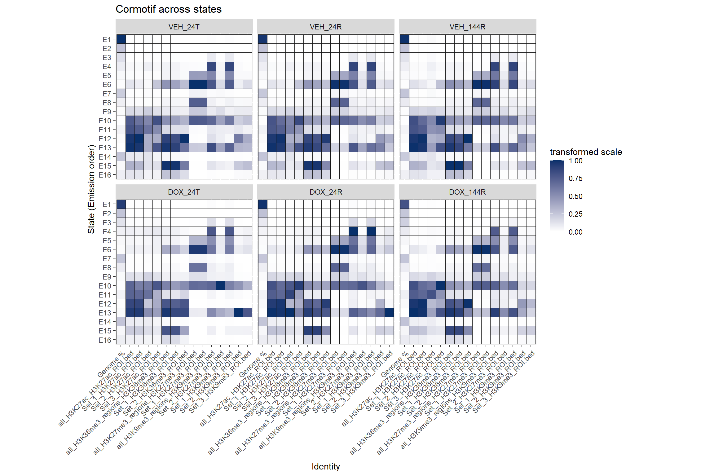

ChromHMM
Renee Matthews
2026-01-23
Last updated: 2026-01-23
Checks: 7 0
Knit directory: DXR_continue/
This reproducible R Markdown analysis was created with workflowr (version 1.7.1). The Checks tab describes the reproducibility checks that were applied when the results were created. The Past versions tab lists the development history.
Great! Since the R Markdown file has been committed to the Git repository, you know the exact version of the code that produced these results.
Great job! The global environment was empty. Objects defined in the global environment can affect the analysis in your R Markdown file in unknown ways. For reproduciblity it’s best to always run the code in an empty environment.
The command set.seed(20250701) was run prior to running
the code in the R Markdown file. Setting a seed ensures that any results
that rely on randomness, e.g. subsampling or permutations, are
reproducible.
Great job! Recording the operating system, R version, and package versions is critical for reproducibility.
Nice! There were no cached chunks for this analysis, so you can be confident that you successfully produced the results during this run.
Great job! Using relative paths to the files within your workflowr project makes it easier to run your code on other machines.
Great! You are using Git for version control. Tracking code development and connecting the code version to the results is critical for reproducibility.
The results in this page were generated with repository version 0db4ed7. See the Past versions tab to see a history of the changes made to the R Markdown and HTML files.
Note that you need to be careful to ensure that all relevant files for
the analysis have been committed to Git prior to generating the results
(you can use wflow_publish or
wflow_git_commit). workflowr only checks the R Markdown
file, but you know if there are other scripts or data files that it
depends on. Below is the status of the Git repository when the results
were generated:
Ignored files:
Ignored: .Rhistory
Ignored: .Rproj.user/
Ignored: data/Bed_exports/
Ignored: data/Cormotif_data/
Ignored: data/DER_data/
Ignored: data/Other_paper_data/
Ignored: data/RDS_files/
Ignored: data/TE_annotation/
Ignored: data/alignment_summary.txt
Ignored: data/all_peak_final_dataframe.txt
Ignored: data/cell_line_info_.tsv
Ignored: data/full_summary_QC_metrics.txt
Ignored: data/motif_lists/
Ignored: data/number_frag_peaks_summary.txt
Untracked files:
Untracked: H3K27ac_all_regions_test.bed
Untracked: H3K27ac_consensus_clusters_test.bed
Untracked: analysis/GREAT_H3K27ac.Rmd
Untracked: analysis/H3K27ac_ChromHMM_FC.Rmd
Untracked: analysis/H3K27ac_cisRE.Rmd
Untracked: analysis/Top2a_Top2b_expression.Rmd
Untracked: analysis/maps_and_plots.Rmd
Untracked: analysis/proteomics.Rmd
Untracked: other_analysis/
Unstaged changes:
Modified: analysis/H3K27_TE_overlap_extend.Rmd
Modified: analysis/H3K27ac_RNA_integration.Rmd
Modified: analysis/H3K27ac_TF_motifs.Rmd
Modified: analysis/final_analysis.Rmd
Modified: analysis/repeatmasker_data.Rmd
Modified: analysis/summit_files_processing.Rmd
Note that any generated files, e.g. HTML, png, CSS, etc., are not included in this status report because it is ok for generated content to have uncommitted changes.
These are the previous versions of the repository in which changes were
made to the R Markdown (analysis/chromHMM.Rmd) and HTML
(docs/chromHMM.html) files. If you’ve configured a remote
Git repository (see ?wflow_git_remote), click on the
hyperlinks in the table below to view the files as they were in that
past version.
| File | Version | Author | Date | Message |
|---|---|---|---|---|
| Rmd | 0db4ed7 | reneeisnowhere | 2026-01-23 | updates |
library(tidyverse)
library(GenomicRanges)
library(plyranges)
library(genomation)
library(readr)
library(rtracklayer)
library(stringr)
library(ggrepel)
library(DT)
library(readxl)
library(ChIPseeker)This is the AIC/BIC plots genrated to figure out how many states we wanted to use for our modeling of our data:
aic_bic_table_TACC <-read_delim("C:/Users/renee/Other_projects_data/DXR_data/TACC_models/model_selection_summary.tsv",
delim = "\t", escape_double = FALSE,
trim_ws = TRUE)
aic_bic_table_TACC %>%
pivot_longer(cols=c(AIC,BIC), names_to = "test_type",values_to = "calculation") %>%
ggplot(.,aes(x=States,y=calculation))+
geom_point()+
geom_line()+
facet_wrap(~test_type)
The results point to 16 states yielding the best results.
I ran the models for 16 states and here is the outcome of those results:
Here is the emission table of the results:
emission_16state <- read_delim("C:/Users/renee/Other_projects_data/DXR_data/TACC_models/Chrom_model_16states_final/emissions_16.txt",
delim = "\t", escape_double = FALSE,
trim_ws = TRUE)
emission_16state %>%
mutate(`State (Emission order)`=factor(`State (Emission order)`, levels=c(1:16))) %>%
pivot_longer(., !`State (Emission order)`, names_to = "Histone",values_to = "emission") %>%
mutate(Histone=factor(Histone,levels=c("H3K27ac","H3K36me3","H3K27me3","H3K9me3"))) %>%
ggplot(., aes(x=Histone, y=`State (Emission order)`, fill=emission))+
geom_tile(color = "grey9",
lwd = .1,
linetype = 1)+
scale_fill_gradient(
low = "white",
high = "#08306B",
limits = c(0, 1), # <- KEY
oob = scales::squish,
na.value = "white", # <- this sets NAs to white
name = "scale"
)+
theme(axis.text.x = element_text(angle = 45, hjust = 1))+
scale_x_discrete(expand = c(0, 0)) +
scale_y_discrete(expand = c(0, 0), limits = rev)+
coord_fixed()+
theme_classic()+
ggtitle("Emission Parameters")+
theme(axis.text.x = element_text(angle = 90, hjust = 1)) Here is the transition plot of the results:
Here is the transition plot of the results:
transition_16state <- read_delim("C:/Users/renee/Other_projects_data/DXR_data/TACC_models/Chrom_model_16states_final/transitions_16.txt",
delim = "\t", escape_double = FALSE,
trim_ws = TRUE)
transition_16state %>%
mutate(`State (from\\to) (Emission order)`=factor(`State (from\\to) (Emission order)`, levels=c(1:16)))%>%
dplyr::rename(state_from_to=`State (from\\to) (Emission order)`) %>%
pivot_longer(., !state_from_to, names_to = "States",values_to = "transition") %>%
mutate(States=factor(States, levels=c(1:16))) %>%
ggplot(., aes(x=States, y=state_from_to, fill=transition))+
geom_tile(color = "grey9",
lwd = .1,
linetype = 1)+
scale_fill_gradient(
low = "white",
high = "#08306B",
limits = c(0, 1), # <- KEY
oob = scales::squish,
na.value = "white", # <- this sets NAs to white
name = "scale"
)+
theme(axis.text.x = element_text(angle = 45, hjust = 1))+
scale_x_discrete(expand = c(0, 0)) +
scale_y_discrete(expand = c(0, 0), limits = rev)+
coord_fixed()+
theme_classic()+
ggtitle("Transition Parameters")+
theme(axis.text.x = element_text(angle = 90, hjust = 1)) ### Enrichment across the states: looking at enrichment of Features
across the states by each group. This helps with the classification and
interpretation of what each state represents.
### Enrichment across the states: looking at enrichment of Features
across the states by each group. This helps with the classification and
interpretation of what each state represents.
DOX_24T_full <- read_delim("C:/Users/renee/Other_projects_data/DXR_data/overlap_enrichment_all/rerun_regions/24t_DOX_16.txt",
delim = "\t", escape_double = FALSE,
trim_ws = TRUE)%>% mutate(group="DOX_24T")
DOX_24R_full <- read_delim("C:/Users/renee/Other_projects_data/DXR_data/overlap_enrichment_all/rerun_regions/24R_DOX_16.txt",
delim = "\t", escape_double = FALSE,
trim_ws = TRUE)%>% mutate(group="DOX_24R")
DOX_144R_full <- read_delim("C:/Users/renee/Other_projects_data/DXR_data/overlap_enrichment_all/rerun_regions/144R_DOX_16.txt",
delim = "\t", escape_double = FALSE,
trim_ws = TRUE) %>% mutate(group="DOX_144R")
VEH_24T_full <- read_delim("C:/Users/renee/Other_projects_data/DXR_data/overlap_enrichment_all/rerun_regions/24t_VEH_16.txt",
delim = "\t", escape_double = FALSE,
trim_ws = TRUE)%>% mutate(group="VEH_24T")
VEH_24R_full <- read_delim("C:/Users/renee/Other_projects_data/DXR_data/overlap_enrichment_all/rerun_regions/24R_VEH_16.txt",
delim = "\t", escape_double = FALSE,
trim_ws = TRUE)%>% mutate(group="VEH_24R")
VEH_144R_full <- read_delim("C:/Users/renee/Other_projects_data/DXR_data/overlap_enrichment_all/rerun_regions/144R_VEH_16.txt",
delim = "\t", escape_double = FALSE,
trim_ws = TRUE)%>% mutate(group="VEH_144R") DOX_24T_gene <- read_delim("C:/Users/renee/Other_projects_data/DXR_data/16-internal-enrichment/24t_DOX_16.txt",
delim = "\t", escape_double = FALSE,
trim_ws = TRUE)%>% mutate(group="DOX_24T")
DOX_24R_gene <- read_delim("C:/Users/renee/Other_projects_data/DXR_data/16-internal-enrichment/24R_DOX_16.txt",
delim = "\t", escape_double = FALSE,
trim_ws = TRUE)%>% mutate(group="DOX_24R")
DOX_144R_gene <- read_delim("C:/Users/renee/Other_projects_data/DXR_data/16-internal-enrichment/144R_DOX_16.txt",
delim = "\t", escape_double = FALSE,
trim_ws = TRUE) %>% mutate(group="DOX_144R")
VEH_24T_gene <- read_delim("C:/Users/renee/Other_projects_data/DXR_data/16-internal-enrichment/24t_VEH_16.txt",
delim = "\t", escape_double = FALSE,
trim_ws = TRUE)%>% mutate(group="VEH_24T")
VEH_24R_gene <- read_delim("C:/Users/renee/Other_projects_data/DXR_data/16-internal-enrichment/24R_VEH_16.txt",
delim = "\t", escape_double = FALSE,
trim_ws = TRUE)%>% mutate(group="VEH_24R")
VEH_144R_gene <- read_delim("C:/Users/renee/Other_projects_data/DXR_data/16-internal-enrichment/144R_VEH_16.txt",
delim = "\t", escape_double = FALSE,
trim_ws = TRUE)%>% mutate(group="VEH_144R")
all_genes_states <-
VEH_144R_gene %>%
bind_rows(DOX_144R_gene) %>%
bind_rows(DOX_24R_gene) %>%
bind_rows(VEH_24R_gene) %>%
bind_rows(DOX_24T_gene) %>%
bind_rows(VEH_24T_gene) DOX_24T_ZFP <- read_delim("C:/Users/renee/Other_projects_data/DXR_data/overlap_enrichment_all/ZFP_run/24t_DOX_16.txt",
delim = "\t", escape_double = FALSE,
trim_ws = TRUE)%>% mutate(group="DOX_24T")
DOX_24R_ZFP <- read_delim("C:/Users/renee/Other_projects_data/DXR_data/overlap_enrichment_all/ZFP_run/24R_DOX_16.txt",
delim = "\t", escape_double = FALSE,
trim_ws = TRUE)%>% mutate(group="DOX_24R")
DOX_144R_ZFP <- read_delim("C:/Users/renee/Other_projects_data/DXR_data/overlap_enrichment_all/ZFP_run/144R_DOX_16.txt",
delim = "\t", escape_double = FALSE,
trim_ws = TRUE) %>% mutate(group="DOX_144R")
VEH_24T_ZFP <- read_delim("C:/Users/renee/Other_projects_data/DXR_data/overlap_enrichment_all/ZFP_run/24t_VEH_16.txt",
delim = "\t", escape_double = FALSE,
trim_ws = TRUE)%>% mutate(group="VEH_24T")
VEH_24R_ZFP <- read_delim("C:/Users/renee/Other_projects_data/DXR_data/overlap_enrichment_all/ZFP_run/24R_VEH_16.txt",
delim = "\t", escape_double = FALSE,
trim_ws = TRUE)%>% mutate(group="VEH_24R")
VEH_144R_ZFP <- read_delim("C:/Users/renee/Other_projects_data/DXR_data/overlap_enrichment_all/ZFP_run/144R_VEH_16.txt",
delim = "\t", escape_double = FALSE,
trim_ws = TRUE)%>% mutate(group="VEH_144R")
all_ZFPs_states <-
VEH_144R_ZFP %>%
bind_rows(DOX_144R_ZFP) %>%
bind_rows(DOX_24R_ZFP) %>%
bind_rows(VEH_24R_ZFP) %>%
bind_rows(DOX_24T_ZFP) %>%
bind_rows(VEH_24T_ZFP)
just_ZFP <- all_ZFPs_states[,c("State (Emission order)","ZFP_proteins.bed","group")]
just_ZFP %>%
dplyr::filter(`State (Emission order)` !="Base")# A tibble: 96 × 3
`State (Emission order)` ZFP_proteins.bed group
<chr> <dbl> <chr>
1 E2 0.212 VEH_144R
2 E1 0.712 VEH_144R
3 E4 2.06 VEH_144R
4 E3 1.82 VEH_144R
5 E9 0.745 VEH_144R
6 E7 0.649 VEH_144R
7 E8 0.774 VEH_144R
8 E6 0.764 VEH_144R
9 E5 0.561 VEH_144R
10 E11 1.64 VEH_144R
# ℹ 86 more rowsall_files_states <-
VEH_144R_full %>%
bind_rows(DOX_144R_full) %>%
bind_rows(DOX_24R_full) %>%
bind_rows(VEH_24R_full) %>%
bind_rows(DOX_24T_full) %>%
bind_rows(VEH_24T_full)
long_file <- all_files_states %>%
dplyr::select(`State (Emission order)`,
`Genome %`,
`GRCh38-cCREs.bed`,
`SCREEN_hg38_CA-CTCF.bed`:SCREEN_hg38_pELS.bed,
Set_1_H3K27ac_ROI.bed:Set_3_H3K27ac_ROI.bed,
all_H3K27ac_H3K27ac_ROI.bed,
LINE_rptmasker.bed,
SINE_rptmasker.bed,
LTR_rptmasker.bed,
DNA_rptmasker.bed,
Retroposon_rptmasker.bed,
RC_rptmasker.bed,
Low_complexity_rptmasker.bed,
RNA_rptmasker.bed,
Satellite_rptmasker.bed,
Simple_repeat_rptmasker.bed,
Unknown_rptmasker.bed,
rRNA_rptmasker.bed:group) %>%
mutate(`State (Emission order)`=factor(`State (Emission order)`, levels = c(paste0("E", 1:16),"Base"))) %>%
dplyr::filter(`State (Emission order)` != "Base") %>%
pivot_longer(., cols=!c(`State (Emission order)`,group), names_to = "Identity",values_to = "Fold_enrichment") %>%
mutate(Identity=str_remove(Identity,".bed")) %>%
mutate(Identity=factor(Identity,
levels=c("Genome %",
"GRCh38-cCREs",
"SCREEN_hg38_CA-CTCF",
"SCREEN_hg38_CA-H3K4me3",
"SCREEN_hg38_CA-TF",
"SCREEN_hg38_CA",
"SCREEN_hg38_PLS",
"SCREEN_hg38_TF",
"SCREEN_hg38_pELS",
"SCREEN_hg38_dELS",
"all_H3K27ac_H3K27ac_ROI",
"Set_1_H3K27ac_ROI",
"Set_2_H3K27ac_ROI",
"Set_3_H3K27ac_ROI",
"LINE_rptmasker",
"SINE_rptmasker",
"LTR_rptmasker",
"DNA_rptmasker",
"Retroposon_rptmasker",
"RC_rptmasker",
"Low_complexity_rptmasker",
"RNA_rptmasker",
"Satellite_rptmasker",
"Simple_repeat_rptmasker",
"Unknown_rptmasker",
"rRNA_rptmasker",
"scRNA_rptmasker",
"snRNA_rptmasker",
"srpRNA_rptmasker",
"tRNA_rptmasker"))) %>%
mutate(group=factor(group,levels=c("VEH_24T","VEH_24R","VEH_144R","DOX_24T", "DOX_24R", "DOX_144R")))# columns to pivot (exclude ID columns)
id_cols <- c("State (Emission order)", "group")
all_genes_states_long <-
all_genes_states %>%
mutate(`State (Emission order)`=paste0("E",`State (Emission order)`)) %>%
left_join(just_ZFP) %>%
mutate(`State (Emission order)` = factor(`State (Emission order)`,
levels = c(paste0("E",1:16),"EBase"))) %>%
filter(`State (Emission order)` != "EBase") %>%
pivot_longer(
cols = -all_of(id_cols),
names_to = "Identity",
values_to = "Fold_enrichment"
) %>%
# preserve original order
mutate(Identity = factor(Identity, levels =c( names(all_genes_states)[!names(all_genes_states) %in% id_cols],"ZFP_proteins.bed"))) %>%
# create cleaned label for plotting
mutate(Identity_label = case_when(
str_detect(Identity, "\\.hg38\\.bed\\.gz$") ~ str_remove(Identity, "\\.hg38\\.bed\\.gz$"),
str_detect(Identity, "\\.bed$") ~ str_remove(Identity, "\\.bed$"),
TRUE ~ Identity # keep everything else unchanged
),
group = factor(group,
levels = c("VEH_24T","VEH_24R","VEH_144R",
"DOX_24T","DOX_24R","DOX_144R")))
final_order <- unique(all_genes_states_long$Identity_label)
all_genes_states_long <- all_genes_states_long %>%
mutate(Identity_label=factor(Identity_label,levels=final_order))Looking a genomic features:
all_genes_states_long %>%
group_by(Identity) %>% # i.e. per annotation column
mutate(
FE_min = min(Fold_enrichment, na.rm = TRUE),
FE_max = max(Fold_enrichment, na.rm = TRUE),
chromhmm_scaled = (Fold_enrichment - FE_min) / (FE_max - FE_min)
) %>%
ggplot(.,aes(x=Identity_label,y=`State (Emission order)`, fill=chromhmm_scaled))+
geom_tile(color = "grey9",
lwd = .1,
linetype = 1)+
scale_fill_gradient(
low = "white",
high = "#08306B",
limits = c(0, 1), # <- KEY
oob = scales::squish,
na.value = "white", # <- this sets NAs to white
name = "transformed scale"
)+
theme(axis.text.x = element_text(angle = 45, hjust = 1))+
facet_wrap(~group, nrow=1, ncol=6)+
scale_y_discrete(limits=rev)+
ggtitle("Genic region enrichment across states")+
coord_fixed()
long_file %>%
dplyr::filter(stringr::str_detect(Identity, "SCREEN")) %>%
group_by(Identity) %>% # i.e. per annotation column
mutate(
FE_min = min(Fold_enrichment, na.rm = TRUE),
FE_max = max(Fold_enrichment, na.rm = TRUE),
chromhmm_scaled = (Fold_enrichment - FE_min) / (FE_max - FE_min)
) %>%
ggplot(.,aes(x=Identity,y=`State (Emission order)`, fill=chromhmm_scaled))+
geom_tile(color = "grey9",
lwd = .1,
linetype = 1)+
scale_fill_gradient(
low = "white",
high = "#08306B",
limits = c(0, 1), # <- KEY
oob = scales::squish,
na.value = "white", # <- this sets NAs to white
name = "transformed scale"
)+
theme(axis.text.x = element_text(angle = 45, hjust = 1))+
facet_wrap(~group, nrow=1, ncol=6)+
scale_y_discrete(limits=rev)+
ggtitle("Enhancer enrichment acros states")+
coord_fixed() ### Cormotif set enrichment across states
### Cormotif set enrichment across states
Each Histone will have slices of their own states. Here are all sets next to all states
order <- c("Genome %",
"all_H3K27ac_H3K27ac_ROI.bed",
"Set_1_H3K27ac_ROI.bed" ,
"Set_2_H3K27ac_ROI.bed",
"Set_3_H3K27ac_ROI.bed",
"all_H3K36me3_regions_H3K36me3_ROI.bed",
"Set_1_H3K36me3_ROI.bed",
"Set_2_H3K36me3_ROI.bed",
"all_H3K27me3_regions_H3K27me3_ROI.bed",
"Set_1_H3K27me3_ROI.bed",
"all_H3K9me3_regions_H3K9me3_ROI.bed",
"Set_2_H3K27me3_ROI.bed" ,
"Set_1_H3K9me3_ROI.bed",
"Set_2_H3K9me3_ROI.bed",
"Set_3_H3K9me3_ROI.bed" ,
"ZFP_proteins.bed")
all_ZFPs_states %>%
mutate(
`State (Emission order)` = as.character(`State (Emission order)`),
`State (Emission order)` = case_when(
`State (Emission order)` %in% as.character(1:16) ~ paste0("E", `State (Emission order)`),
TRUE ~ `State (Emission order)`)) %>%
mutate(`State (Emission order)` = factor(`State (Emission order)`,
levels = c(paste0("E",1:16), "Base"))) %>%
filter(`State (Emission order)` != "Base") %>%
pivot_longer(., -c(`State (Emission order)`,group), names_to = "Identity", values_to="Fold_enrichment") %>%
mutate(group=factor(group,levels=c("VEH_24T","VEH_24R","VEH_144R","DOX_24T", "DOX_24R", "DOX_144R"))) %>%
mutate(Identity=factor(Identity, levels=order)) %>%
dplyr::filter(Identity!="ZFP_proteins.bed") %>%
group_by(Identity) %>% # i.e. per annotation column
mutate(
FE_min = min(Fold_enrichment, na.rm = TRUE),
FE_max = max(Fold_enrichment, na.rm = TRUE),
chromhmm_scaled = (Fold_enrichment - FE_min) / (FE_max - FE_min)
) %>%
ggplot(.,aes(x=Identity,y=`State (Emission order)`, fill=chromhmm_scaled))+
geom_tile(color = "grey9",
lwd = .1,
linetype = 1)+
scale_fill_gradient(
low = "white",
high = "#08306B",
limits = c(0, 1), # <- KEY
oob = scales::squish,
na.value = "white", # <- this sets NAs to white
name = "transformed scale"
)+
theme(axis.text.x = element_text(angle = 45, hjust = 1))+
facet_wrap(~group, nrow=2, ncol=3)+
scale_y_discrete(limits=rev)+
ggtitle("Cormotif across states")+
coord_fixed()
sessionInfo()R version 4.4.2 (2024-10-31 ucrt)
Platform: x86_64-w64-mingw32/x64
Running under: Windows 11 x64 (build 26200)
Matrix products: default
locale:
[1] LC_COLLATE=English_United States.utf8
[2] LC_CTYPE=English_United States.utf8
[3] LC_MONETARY=English_United States.utf8
[4] LC_NUMERIC=C
[5] LC_TIME=English_United States.utf8
time zone: America/Chicago
tzcode source: internal
attached base packages:
[1] grid stats4 stats graphics grDevices utils datasets
[8] methods base
other attached packages:
[1] ChIPseeker_1.42.1 readxl_1.4.5 DT_0.33
[4] ggrepel_0.9.6 rtracklayer_1.66.0 genomation_1.38.0
[7] plyranges_1.26.0 GenomicRanges_1.58.0 GenomeInfoDb_1.42.3
[10] IRanges_2.40.1 S4Vectors_0.44.0 BiocGenerics_0.52.0
[13] lubridate_1.9.4 forcats_1.0.0 stringr_1.5.1
[16] dplyr_1.1.4 purrr_1.1.0 readr_2.1.5
[19] tidyr_1.3.1 tibble_3.3.0 ggplot2_3.5.2
[22] tidyverse_2.0.0 workflowr_1.7.1
loaded via a namespace (and not attached):
[1] RColorBrewer_1.1-3
[2] rstudioapi_0.17.1
[3] jsonlite_2.0.0
[4] magrittr_2.0.3
[5] ggtangle_0.0.7
[6] GenomicFeatures_1.58.0
[7] farver_2.1.2
[8] rmarkdown_2.29
[9] fs_1.6.6
[10] BiocIO_1.16.0
[11] zlibbioc_1.52.0
[12] vctrs_0.6.5
[13] memoise_2.0.1
[14] Rsamtools_2.22.0
[15] RCurl_1.98-1.17
[16] ggtree_3.14.0
[17] htmltools_0.5.8.1
[18] S4Arrays_1.6.0
[19] TxDb.Hsapiens.UCSC.hg19.knownGene_3.2.2
[20] plotrix_3.8-4
[21] curl_7.0.0
[22] cellranger_1.1.0
[23] SparseArray_1.6.2
[24] gridGraphics_0.5-1
[25] sass_0.4.10
[26] KernSmooth_2.23-26
[27] bslib_0.9.0
[28] htmlwidgets_1.6.4
[29] plyr_1.8.9
[30] impute_1.80.0
[31] cachem_1.1.0
[32] GenomicAlignments_1.42.0
[33] igraph_2.1.4
[34] whisker_0.4.1
[35] lifecycle_1.0.4
[36] pkgconfig_2.0.3
[37] Matrix_1.7-3
[38] R6_2.6.1
[39] fastmap_1.2.0
[40] GenomeInfoDbData_1.2.13
[41] MatrixGenerics_1.18.1
[42] enrichplot_1.26.6
[43] digest_0.6.37
[44] aplot_0.2.8
[45] colorspace_2.1-1
[46] patchwork_1.3.2
[47] AnnotationDbi_1.68.0
[48] ps_1.9.1
[49] rprojroot_2.1.1
[50] RSQLite_2.4.3
[51] labeling_0.4.3
[52] timechange_0.3.0
[53] httr_1.4.7
[54] abind_1.4-8
[55] compiler_4.4.2
[56] bit64_4.6.0-1
[57] withr_3.0.2
[58] BiocParallel_1.40.2
[59] DBI_1.2.3
[60] gplots_3.2.0
[61] R.utils_2.13.0
[62] rappdirs_0.3.3
[63] DelayedArray_0.32.0
[64] rjson_0.2.23
[65] caTools_1.18.3
[66] gtools_3.9.5
[67] tools_4.4.2
[68] ape_5.8-1
[69] httpuv_1.6.16
[70] R.oo_1.27.1
[71] glue_1.8.0
[72] restfulr_0.0.16
[73] callr_3.7.6
[74] nlme_3.1-168
[75] GOSemSim_2.32.0
[76] promises_1.3.3
[77] getPass_0.2-4
[78] gridBase_0.4-7
[79] reshape2_1.4.4
[80] fgsea_1.32.4
[81] generics_0.1.4
[82] gtable_0.3.6
[83] BSgenome_1.74.0
[84] tzdb_0.5.0
[85] R.methodsS3_1.8.2
[86] seqPattern_1.38.0
[87] data.table_1.17.8
[88] hms_1.1.3
[89] utf8_1.2.6
[90] XVector_0.46.0
[91] pillar_1.11.0
[92] vroom_1.6.5
[93] yulab.utils_0.2.1
[94] later_1.4.2
[95] splines_4.4.2
[96] treeio_1.30.0
[97] lattice_0.22-7
[98] bit_4.6.0
[99] tidyselect_1.2.1
[100] GO.db_3.20.0
[101] Biostrings_2.74.1
[102] knitr_1.50
[103] git2r_0.36.2
[104] SummarizedExperiment_1.36.0
[105] xfun_0.52
[106] Biobase_2.66.0
[107] matrixStats_1.5.0
[108] stringi_1.8.7
[109] UCSC.utils_1.2.0
[110] lazyeval_0.2.2
[111] boot_1.3-32
[112] ggfun_0.2.0
[113] yaml_2.3.10
[114] evaluate_1.0.5
[115] codetools_0.2-20
[116] qvalue_2.38.0
[117] ggplotify_0.1.2
[118] cli_3.6.5
[119] processx_3.8.6
[120] jquerylib_0.1.4
[121] dichromat_2.0-0.1
[122] Rcpp_1.1.0
[123] png_0.1-8
[124] XML_3.99-0.18
[125] parallel_4.4.2
[126] blob_1.2.4
[127] DOSE_4.0.1
[128] bitops_1.0-9
[129] tidytree_0.4.6
[130] scales_1.4.0
[131] crayon_1.5.3
[132] rlang_1.1.6
[133] fastmatch_1.1-6
[134] cowplot_1.2.0
[135] KEGGREST_1.46.0